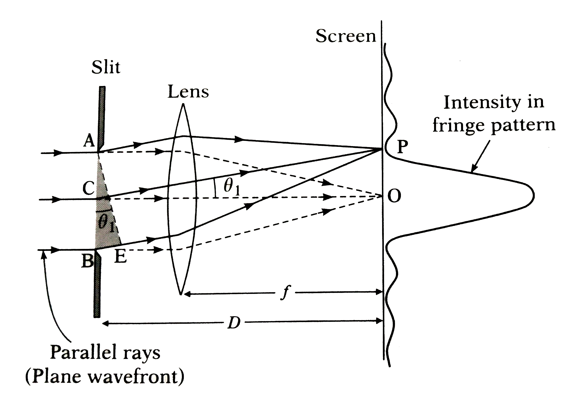
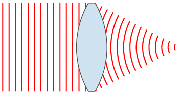

Given a function f(x) on floating number x and an initial guess for root, find root of function in interval.
Here f(x) represents transcendental equation.
For simplicity, derivative of function is also provided.
Example:
Input:
A function of x (for example= x2 -2sinx),
derivative function of x = 2(x-cosx)
and an initial guess x0 = 2
Output:
The value of root is : 1.405
or any other value close to root.
In optics, the
Fraunhofer diffraction equation is used to model the diffraction of waves when the
diffraction pattern is viewed at a long distance from the diffracting object (in the far-field region), and
also when it is viewed at the focal plane of an imaging lens. In contrast, the diffraction pattern created
near the object (in the near field region) is given by the Fresnel diffraction equation.


By using the intensity equation I/I
0= (sinx/x)
2,maxima or minima is calculated
accordingly. Here the value of x is founded by solving the equation (x-tanx) and finding its different
roots.